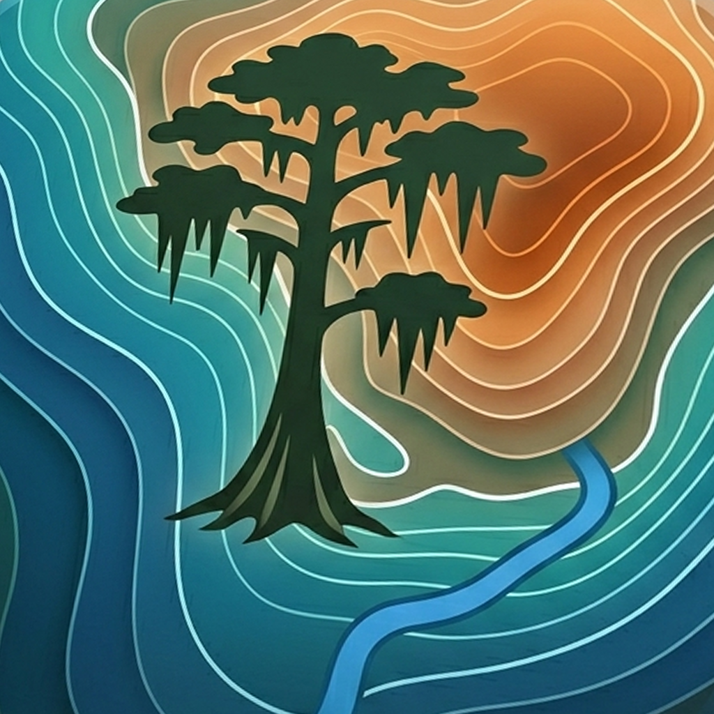

Last updated: 2026-05-31
Everglades Topo is a map for exploring South Florida's elevation and terrain, built from detailed public elevation data. The app does not require an account and does not include ads, analytics SDKs, tracking SDKs, or social features.
Everglades Topo does not collect personal data for ELCO.
The app does not use third-party analytics, advertising SDKs, tracking pixels, third-party login, or an ELCO backend for user accounts. It does not send your location history, map usage, selected corridors, search activity, contacts, photos, microphone audio, or device identifiers to us.
Everglades Topo may ask for location permission so it can:
Everglades Topo doesn't collect your information. Your location is used right on your device to power these features — it never goes to us. There is no ELCO account or server that receives your location.
You can deny location permission and still browse the map manually. You can also change location permission later in iOS Settings.
The topography overlays in Everglades Topo are built into the app ahead of time from detailed public elevation data. The large original source files are not bundled in the app.
The satellite imagery, on the other hand, comes from your phone's own map — Apple Maps on iOS, or Google on Android — not from us. We don't run those maps and we don't receive anything from them. When your phone draws the satellite map, any location or network request that involves is between you and Apple or Google, handled under their own privacy policies, not ours. Everglades Topo doesn't see that data and doesn't use it for analytics or advertising.
This version of Everglades Topo is primarily session-based. If future versions save preferences such as selected layers, opacity, map view, or onboarding state, those settings should be stored locally on your device unless this policy is updated.
Everglades Topo does not include a third-party crash reporting SDK in this version. Apple may provide developers with aggregated crash logs or diagnostics according to the device owner's Apple settings. If you contact support, you choose what information to include in your message.
Everglades Topo does not knowingly collect information from anyone, including children.
If this policy changes, the updated version will be posted with a new date.
For privacy questions or support, contact: elco.apps.team+everglades.support@gmail.com